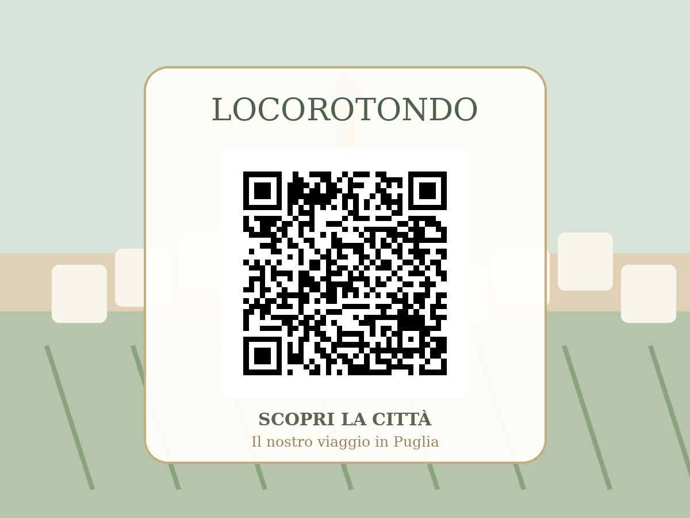

Il nostro viaggio in Puglia
Tutte le cittàTavolo Locorotondo
Locorotondo
Un balcone sulla Valle d’Itria
La città
Locorotondo è uno dei borghi più riconoscibili della Valle d’Itria. Il centro storico, dalla forma circolare, è fatto di vicoli bianchi, balconi fioriti e case raccolte attorno alle chiese.
Da scoprire
Centro storico, Chiesa Madre di San Giorgio, Palazzo Morelli, Belvedere e paesaggio della Valle d’Itria.
Da assaggiare
Vino Locorotondo DOC, orecchiette, capocollo, formaggi, taralli e prodotti della Valle d’Itria.
Tradizioni & curiosità
Il nome richiama proprio la forma circolare dell’antico abitato, che avvolge il cuore del borgo.
Scopri Locorotondo

“Locorotondo è eleganza discreta, pietra bianca e un panorama che invita a rallentare.”